Hello!

・写真のようなもの。
・基盤を作る際に必要になる。
・そのため本日は導入として、マイコンとクリスタル、コンデンサを用いた簡単な回路を作成する。
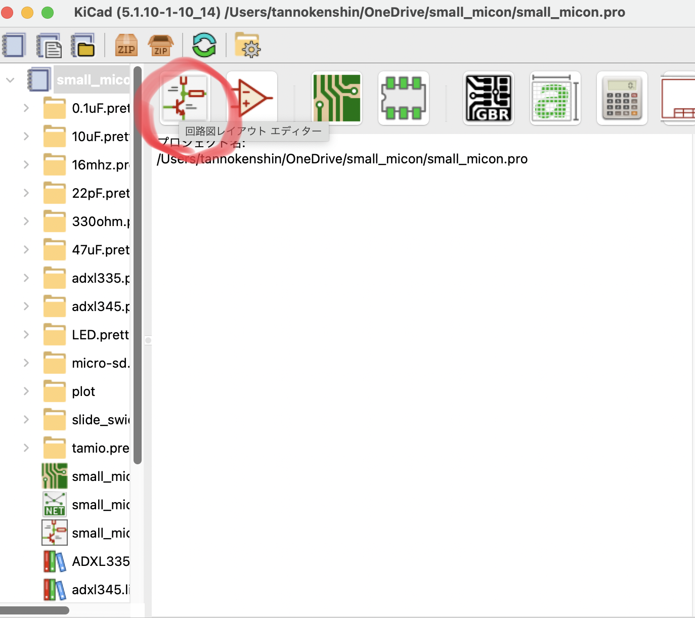
・赤丸を押して回路作成エディターを開く。
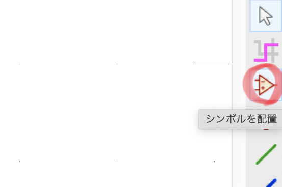
・画面右側にある赤丸のアイコンをクリックする。
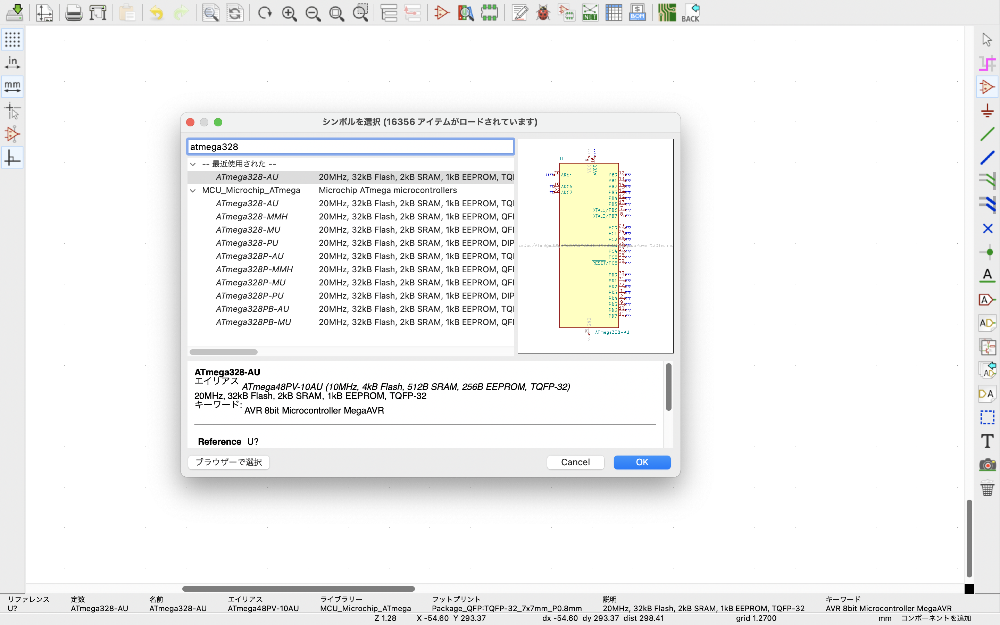
・配置したいシンボルの名前、マイコンの名前を検索する。
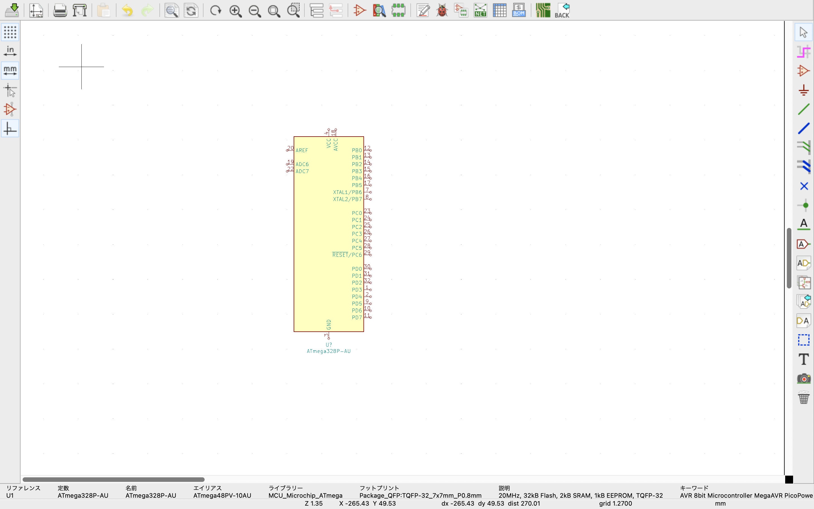
・選択して好みの場所に配置する。
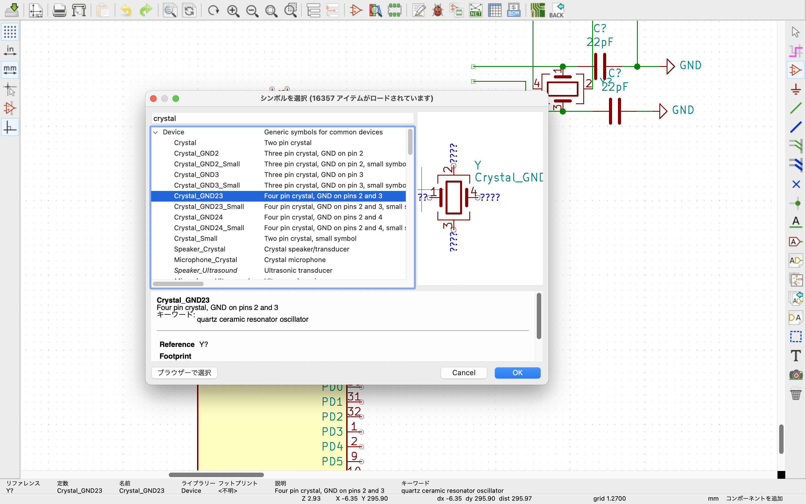
・次にクリスタルを配置。
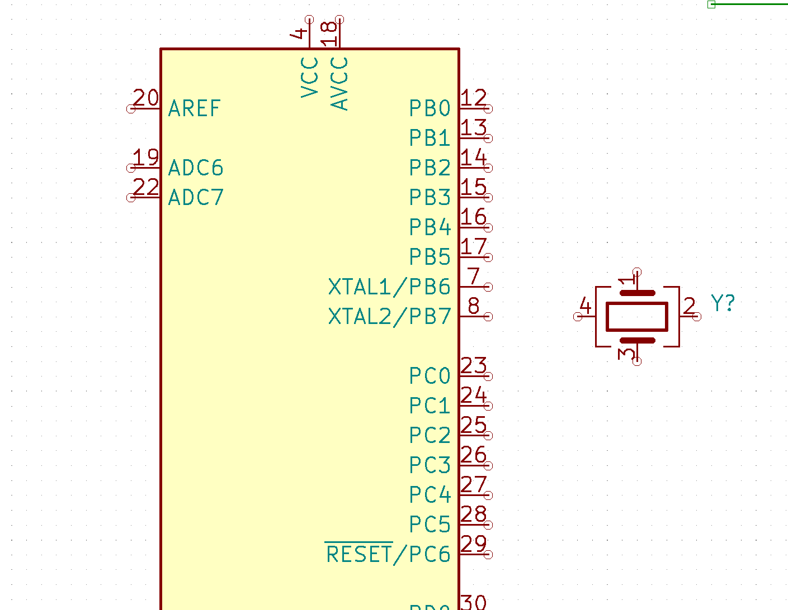
・画像のようにどんどん配置していく。
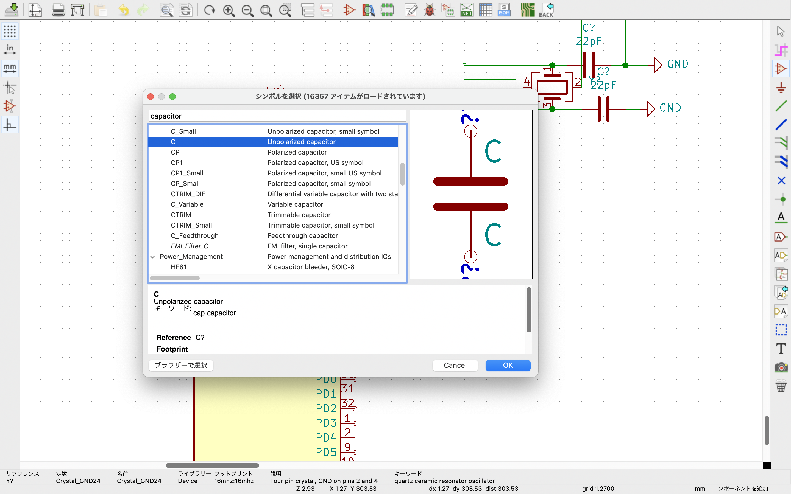
・次にコンデンサを配置する。
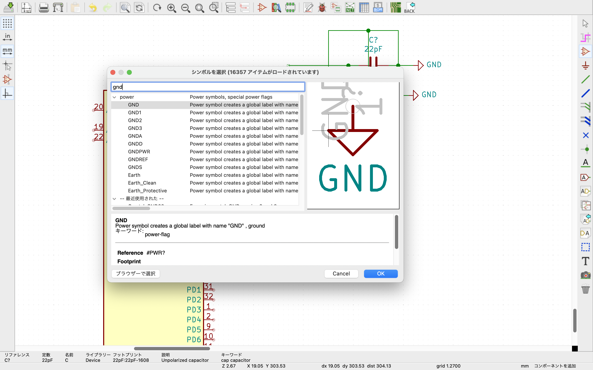
・最後にGNDを配置する。
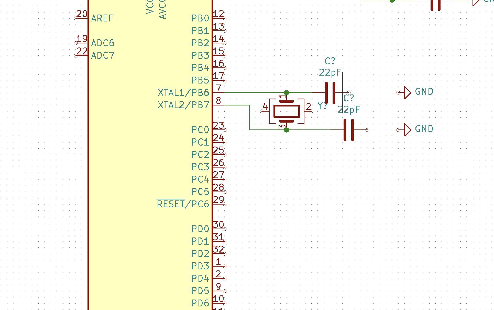
・配置したマイコンとクリスタル、コンデンサをつなげる。
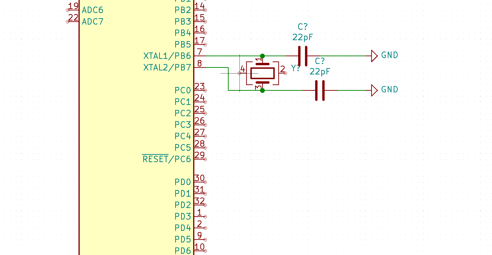
・次にGNDとつなげる。
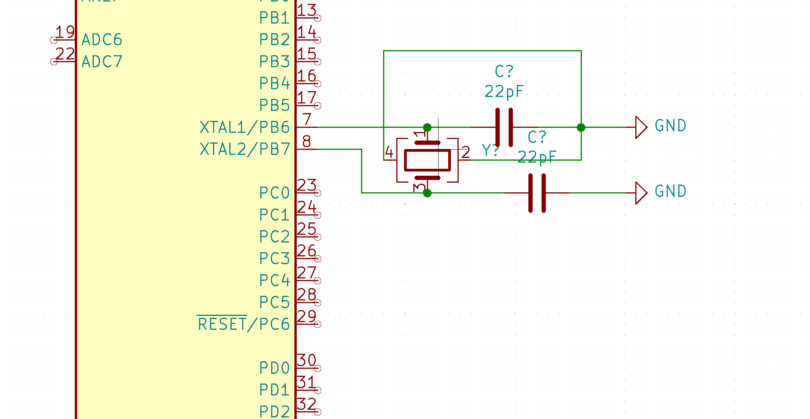
・最後にクリスタルの繋がっていない部分をGNDとつなげる。
・今回は回路をデザインしました。
・まだまだ何をしているかわからないと思いますが、後々重要になってきます。
・今後、少しずつアップをしていきますが、早く勉強したいという方は、こちら
の動画で勉強してみてください。
Fin.